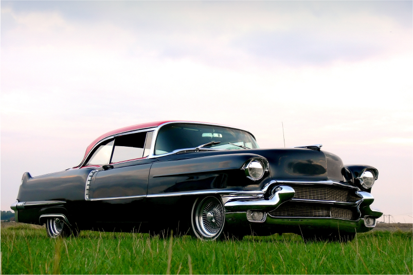

When you buy a car from a formal online car auction, they can go for anywhere between $3,000 to over $10,000. Of course, the junkers will be priced on the lower end, but you can still pick up some pretty decent vehicles from auctions.
And if you’re looking to try your hand at bidding for famous cars and one-of-a-kind automobiles, you might be able to get a steal of a deal from certain online vehicle auctions
Because of this, you might be considering buying cars at auction rather than purchasing directly from a seller or dealership. Whether you’re buying cars for personal use or to stock up your used car dealership, car auction websites are often a smart bet for saving on the makes and models you know and love.
Are you interested in learning more about online vehicle auctions and car auctions in general? This all-encompassing primer on automobile auctions is here to help. We’ll dive into the 5 Best Car Auction Websites out there, take you on a trip to the 5 Most Famous Auto Auctions In The Entire United States, and provide you plenty of tips and tricks for you to employ on your way to a winning auction bid.
Whether you’re looking for a salvage auto auction, cheap car auctions with a variety of different vehicles to choose from, or another online public auto auction USA with priceless vehicles on the block, we’ve got you covered.
Let’s start, though, by taking a big-picture look at the reasons why cars are auctioned in the first place.
Why Would a Car Go to Auction?
There are a variety of reasons why automobiles end up on the auction block. They include:
In the last case, remember that cars damaged by weather and accidents can only get sold at specialized auctions. Some of these auctions facilitate online car bidding, while others are in-person affairs. Bookmark our complete guide to buying cars at online auctions for more information about cheap car auctions that sell these types of vehicles.
What Types of Online Car Auctions Are There?
You might think that all online car auctions are the same, but that’s not true! There are several types of online car auctions for public and private audiences for you to choose from.
Salvage car auctions feature vehicles that are badly damaged that insurance companies deem as a “total loss.” When you purchase a car from a salvage auto auction, you can score your dream car at a reduced price that would be unthinkable elsewhere. However, you’re taking a chance when buying a car at a salvage auto auction -- so make sure that you do your due diligence and buy a car that’s worth the fix-up price!
Auto dealerships also rely on auctions to clear out excess inventory, sending out overstock cars to auctions for quick money. As a result, you can get fantastic deals on brand new vehicles at a dealership car auction USA that stocks these types of automobiles. You can easily benefit from dealership auctions, whether you’re purchasing for yourself or to stock your own dealership.
Repo car auctions sell cars that are repossessed by the bank. Many of these repossessed vehicles are in excellent condition, making them ideal inventory to consider when you’re purchasing for a used car dealership.
In addition, rental car auctions allow rental car companies to sell their vehicles to auctions when they’ve reached a certain mileage limit. Because these cars are often very well maintained, these can also be great steals for personal or professional use.
And if you’re looking for car auction websites that highlight famous cars, priceless antiques, and other vehicular oddities, there are car bidding websites out there waiting for you to register!
As you can see, you have plenty of choices when buying cars at auction. However, you still need to have a basic understanding of the
What Happens at an Online Car Auction?
Using an online car auction is very similar to going to an in-person auction. However, the process is much easier since you don’t have to go anywhere and can search vehicles from the comfort of your own home or office.
When you log onto an online car auction site, you’ll see a menu and search bar. You can use either one to enter the specifics of the vehicles you’re looking for. For example, if you want a 2000 Honda Accord, just type it into the search bar, hit “enter,” and it’ll generate all the relevant online auction search results for you.
If you don’t know exactly what you want to buy, that’s okay too. You can just click on the menu to go to the general car listings page. On this page, you’ll find categories such as Classics, Hot Items, Hybrids, and more. You can tailor your car bidding to fit your particular wants and needs.
Once you find a car you’re interested in, you can view the current bid on it and determine whether or not you want to pursue a bid of your own. You can then put in your maximum bid and the car auction website will automatically bid for you. This means that you don’t have to sit around and wait for an auto auction to run its course. At the end of the auction, you’ll be notified if you’ve won or not.
If you make the winning auction bid, then you’ll need to pay for your purchase. To avoid fraud, many online auctions use escrow services. This third party holds your money and then releases it to the seller once you’ve received the vehicle.
Now that you have a solid understanding of how online vehicle auctions work, let’s travel around the web together and take a look at the Top 5 Car Auction Sites going strong today.
The Top 5 Best Car Auction Sites
Perhaps you’re in the market to make a mass purchase and ship multiple cars to your auto dealership. Or maybe you want to buy a vehicle or two for your household. You might also simply be looking for cheap car auctions to find popular makes and models at vastly reduced prices.
Either way, you should only concern yourself with the best online auction sites to ensure the best auction prices and the highest quality services. The following five websites are the best of the best car auction sites in the world right now.
1. COPART
If you’re looking for non-repairable, clean title, and salvage cars, then Copart is the online auction site you should use. Vehicles offered on this site include cars, trucks, classic cars, motorcycles, industrial vehicles, and even more.
Copart was first founded in 1982 and sells over 2 million vehicles a year. If you’re looking for a reputable auto auction site that will deliver exactly what it promises, it’s the way to go.
2. ACV AUCTIONS
For those searching for free online car auction sites, you’ll want to check out ACV Auctions. This company uses industry-leading vehicle condition reports, which means you’ll get full transparency about the cars you’re looking at.
The vehicle auctions at ACV Auctions are just 20 minutes long and give you access to thousands of car dealers.
We mentioned before that a disadvantage of online car auctions is that you can’t inspect the vehicle in person. ACV Auctions understands this caveat, which is why they’ve developed the Audio Motor Profile (AMP). With this feature, you can listen to high-def audio recordings of the cars’ engines for an unparalleled inside look at your potential auction purchase.
In addition, they have Virtual Lift, which gives you high-def pictures of car undercarriages. Combined with AMP, you’ll have full confidence that you won’t get any surprises when you receive your vehicle.
What’s great about ACV Auctions’ app is that it provides a seamless car title transfer process. In addition, they offer extended buyer assurance with 10-day arbitration protection free of charge. If you want 20 or 30 days of protection, you can pay a little extra for that.
Sign-up is free for ACV Auctions and buy fees are low as well. You’ll also have peace of mind knowing that they feature a secure transaction platform too.
3. IAAI
IAAI is an online car auction run by Insurance Auto Auctions. Founded in 1982, IAAI has an extensive and lucrative history of auctioning cars.
This is another site that sells salvage vehicles and as the name suggests, they feature insurance auctions too. Other cars they offer include total-loss, fleet lease, recovered-theft, and dealer trade-in vehicles.
When you use this auction site, you have several options available. They are:
IAA Online (online auction with over 190 branches and live auctioneers)
IAA Timed Auctions (individual auctions for vehicles)
IAA Buy Now (purchase a vehicle immediately)
IAA Online Exclusive (series of auctions on specific types of cars, such as RVs)
IAA Screen Sale (bid on a screen at an IAA branch)
A plus of getting your vehicles through IAAI is they offer many payment options, which makes the entire car purchasing process easier for you.
Another selling point is that if you don’t have a dealer’s license, you can still bid on IAAI. To do so, you just have to pay an annual fee of $200. One drawback of this is that you can only bid on the auctions that are available to the public, which means you can miss out on some premium vehicles that are only available to licensed dealers.
4. AUTO AUCTION MALL
Auto Auction Mall is a dealer-only auction site that allows people without dealer’s licenses to bid on vehicles. It’s a complete treasure trove; this online auction site has a large selection of salvage vehicles, as well as used and pre-owned cars. At any given time, they have over 200,000 live auctions going on.
This company lists its auto auctions at wholesale prices, which means you can save a significant amount of money when you bid here. You do have to make a security deposit of 10%, though.
Do note that while membership is free, you’ll have to pay a fee of $299 after winning a car. This is a nominal fee for elite access to dealer-only vehicle auctions.
What makes Auto Auction Mall unique is that they offer multiple auto financing options for you to purchase the vehicles you want and need. For example, some of the car financing offers they feature include no down payments and super-low interest rates. You can even pre-qualify for vehicle financing without your credit score taking a hit!
If you ever need help during the bidding process, then you’ll be pleased to know that Auto Auction Mall offers a customer support team that’ll assist you through the whole thing.
5. AUTOBIDMASTER
AutoBidMaster is actually a registered Copart broker. That means when you secure membership with AutoBidMaster, you’ll get access to Copart’s inventory as well! Registration with this vehicle auction site is free, so there’s nothing to lose by doing so.
Like many of the other online auction websites, AutoBidMaster offers repairable salvage vehicles as well as used cars at very affordable prices. You can even access their inventory of over 162,000 cars without a dealer’s license.
This company is dedicated to refreshing its stock both daily and weekly, so whenever you log on, you’ll probably find new vehicles. They even stock motorcycles and quad bikes at times, so you never know what you’ll find!
A Few Tips For Online Car Buying
Now that you have more information on how an online car auction works and what the best online car sales auction sites are, you’ll have a better time when you’re shopping for a vehicle. Whether you’re just looking for a car to use yourself or you’re stocking up for your used car dealership, you’ll have the proper knowledge to get the best cars around at the most affordable prices too.
The COVID-19 pandemic has had a big impact on the auto industry, which means there’s no better time than now to get the best prices on used cars. Not only that, but it’s also much cheaper and easier to ship your vehicles too. So take advantage of this situation and purchase the cars you need.
When you’re ready to ship a car from an auction, grab a quote from our online car shipping calculator. You’ll be glad you did.
Before you set your sights on a particular car or start bidding on cars in general, though, it pays to do some online research.
For example, how much do repairs usually cost for this make and model of vehicle? How long is its usual lifespan? What are some key issues owners have and are there affordable/easy ways to get around them?
Your research should also include finding out what the Kelly Blue Book prices are for the cars you’d like. By doing so, you can set reasonable car auction bids and know that you’re not paying an absurd amount for your automobile of choice.
When going through the lists of cars available, make sure to take note of both the age of the car and the mileage. Obviously, the newer the car and the less mileage it has, the better.
In general, a car should accumulate about 13,000 miles per year. If a relatively new vehicle already has 100,000 miles on it, then that’s likely a red flag.
One downside to online car buying is you can’t see the car for yourself. This means you’ll have to be very thorough and take every precaution available to inspect the vehicle as best you can. At in-person auctions, you have the option of personally inspecting the vehicles and even bringing a mechanic with you to have a second pair of expert eyes.
If you prefer the in-person touch when it comes to automobile auctions, we’ve curated a who’s who of the 5 Most Famous Car Auctions In The U.S. for you to consider.
The 5 Most Famous Car Auctions in the USA
Now that you have more information on how an online car auction works and what the best online car sales auction sites are, you’ll have a better time when you’re shopping for a vehicle. Whether you’re just looking for a car to use yourself or you’re stocking up for your used car dealership, you’ll have the proper knowledge to get the best cars around at the most affordable prices too.
Did you know that more than nine million cars get sold at an auction each year? Or that auctions can vary greatly when it comes to the number of employees, size of the auction, acreage, and services offered? Famous car auctions, collector car auctions, normal car auctions — all auctions are different based on the type of cars available and the type of clientele who frequent them.
If you’ve always dreamed of collecting cars or attending famous car auctions, you’re not alone. It’s a rewarding hobby that brings plenty of pleasure to its participants.
And when you participate in automobile auctions that have achieved legendary status, you’ll get a healthy dose of both gratification and competition. With that being said, here’s a rundown of the top five biggest (and most famous) car auctions in the US.
1. Classic Cars Auctions USA: RM Sotheby’s
When it comes to auctions for just about anything of value, Sotheby’s likely deals in it. In 2015, they added vehicles to their plate by formally partnering with RM Auctions on collector car auctions.
The result? RM Sotheby’s , which elevates classic and collector car auctions to the next level.
How? By only dealing in blue-chip, investment-quality vehicle merchandise.
And this hasn’t been hard for RM Sotheby’s to achieve. After all, they’re more than a place to buy vehicles. RM Sotheby’s acts as the official car auction house for big, luxury auto brands like Aston Martin, Porsche, and Ferrari.
RM Sotheby’s also deals in many other top-end manufacturers, and they contribute to essential automobile events such as Amelia Island.
Would you like to get in on the elegance of RM Sotheby’s collector car auctions USA? Check out one of the following events; Concorso d’Eleganza Villa d’Este, Luftgekuhlt, Colorado Grand, Formula 1, Concours d’Elegance, or California Mile.
2. Classic Cars Auctions USA: Worldwide Auctioneers
Are you looking for truly unique collectibles such as rare pre-war vehicles, vintage American muscle cars, or mint condition European race cars? Then, Worldwide Auctioneers‘ famous car auctions USA are your ticket to the most extraordinary vehicles ever auctioned on American soil.
What distinguishes this auction house from the competition? Well, its owners are also automobile specialists and chief auctioneers!
As a result, you can rest assured the inventory on offer has been thoroughly curated. As an investor, you can also go into the process knowing that your investment is a sound one.
When you start exploring Worldwide Auctioneers, you may be surprised to realize it’s smaller than some of the other auction houses mentioned in this article. And that’s by design.
You see, Worldwide Auctioneers places a premium on quality over volume. They also emphasize customer satisfaction, crafting a relaxed, fun, and personalized experience in the process.
These additional experiences include sophisticated preview receptions, personal inspections, and chances to test-drive vehicles up for auction. If you’ve participated in car auctions before, you’ll realize how unique these features are.
3. Classic Cars Auctions USA: Bonhams
Bonhams, like Sotheby’s, is not an exclusive purveyor of vehicles. Nevertheless, the Bonhams Motoring department claims status as the biggest auction house hosting sales of classic cars, related memorabilia, and motorcycles.
The vehicle auctions held by Bonhams are often associated with other world-renowned automobile events. This means, their auto auctions prove exciting and vibrant experiences for car enthusiasts of all kinds.
What do auction participants appreciate most about Bonhams auctions? The company’s reputation for its reach and connoisseurship!
Headquartered in Great Britain, Bonhams has offices in the United States, facilitating its stateside car auction events. Bonhams’ car experts can source auction inventory from all over the planet.
When you have trouble locating a specialty make, model, and/or year,
Bonhams
will help you do so in style.
4. Biggest Car Auctions in USA: Gooding & Company
Gooding & Company stands apart for its dedication to placing only the finest automobiles on the auction block. As a result, expect vibrant events with record-breaking auto sale prices.
Attending one of these events is a worthwhile bucket list experience. Yet, you should also tune in via the company’s live HD webcast if you can’t make it in person. Their car auctions are just that entertaining and crazy to experience.
A leading auction house, Gooding & Company specializes in classic cars, antique automobiles, and racecars across the decades.
Every year, the company holds three distinguished auction events in the US. They include:
-
Pebble Beach, California
-
Amelia Island, Florida
-
Scottsdale, Arizona
Be prepared to see beautiful vehicles from estate sales, prestigious collections, and rare cars from other sources placed on sale at each Gooding & Company car auction event.
5. Biggest Car Auctions in the USA: Barrett-Jackson
For nearly fifty years, Barrett-Jackson has attracted enthusiasts from all over America with its world-class collector car auctions.
These auctions give participants access to thousands of the most sought-after and stunning cars in history.
The company holds its “ World’s Greatest Collector Car Auctions ” in the following locations:
-
Las Vegas, Nevada
-
Palm Beach, Florida
-
Scottsdale, Arizona
Check out their website for live stream broadcasts of these events. They’ll give you a feel for how their vehicle auctions work and what it’s like to participate.
That said, don’t be satisfied with the online experience alone. Barrett-Jackson events encompass far more than merely vehicle auctions. They also offer symposiums, test rides, celebrity appearances, and much more!
Make travel plans for one of Barrett-Jackson’s unique events as soon as you can. You won’t regret it!
What Is the Highest Auction Price for a Car?
Now that we’ve discussed the five most famous car auctions in the US, let’s talk about the highest price ever fetched at collector car auctions. This monumental auction event occurred at RM Sotheby’s Pebble Beach, California, Concours d’Elegance, in August 2018.
The winning vehicle was a spellbinding 1962 Ferrari 250 GTO that sold for a whopping $48.4 million. The car’s owner, Greg Whitten, marveled at what a smart investment the race car turned out to be.
Whitten, who’s been an employee with Microsoft since 1979, purchased it in 2000 for just one-tenth of its jaw-dropping auction price. The sale of this one-of-a-kind Ferrari combined with the other auctions at the event brought in a whopping $368 million for a smashing success.
This revenue represented a 12 percent increase over the previous year and the first significant rise since the market peak in 2014.
Another high-ticket vehicle that deserves an honorable mention in the history of the biggest car auctions in the USA is the breathtaking 1935 Dusenberg SSJ Roadster that sold for $22 million at a Gooding & Company auto auction in 2018.
If you want to
find out even more about the world of
classic car shipping and transportation
, we’ve got your back. After all, it’s what we’re passionate about here at Nexus.
Famous Car Auctions and Internet Car Auction Sites
Whether you choose to hang out at one of the more famous car auctions in the USA or go the online auto auction route, you’ve got plenty of car-buying options. Over the past few years, the car auction market has boomed both in-person and on the web. Whether you want to take a trip to one of the world’s most trusted auctions or bid on an automobile in your pajamas, you can join the auction fray in a matter of minutes.
But, what do you do once you’ve bid on and won your dream car? How do you move your new beauty from the auction block into your garage?
Unless you’re lucky enough to bid on a car in your immediate area, you’ll need to make auto transport arrangements for your auto auction purchase. These car shipping arrangements will vary depending on the type of car that you have purchased.
For example, a fixer-upper from Salvage Bid is perfectly fine to transport on an open car carrier. Of course, you’ll have to factor in added expenses if the car doesn’t run. But, open vehicle transport is still a smart option for a car that doesn’t need added protection.
However, if you’ve purchased a high-end collectible or unique antique at one of the famous car auctions mentioned above, you’ll need to arrange for vehicle transport on an enclosed car trailer. Enclosed car transport is structured in such a way to safeguard high-value vehicles from external hazards such as dust, dirt, rocks, inclement weather, and debris from other cars on the road.
No matter what your circumstances are, grab a free, no-obligation
car transport quote
from us right away. You’ll be surprised and delighted by the cost-effective, efficient car shipping services we offer!


{kind=link}
{kind=link}
{kind=link}
{kind=link}